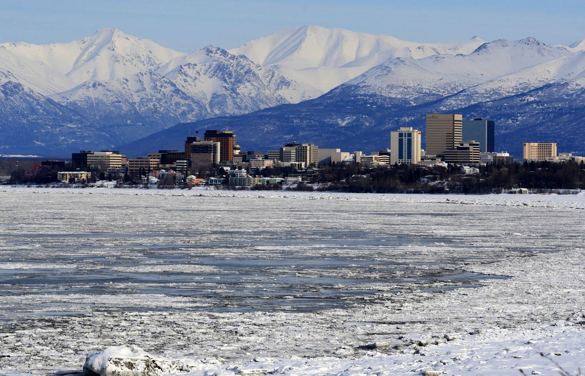

| Venice |
|
Italy |
 |
Approximately 260,000 |
Latitude: 45.4406°N, longitude 12.3155°E |
Venice, known as the "City of Canals," is a breathtaking marvel with its intricate network of waterways, historic architecture, and romantic ambiance. A gondola ride along the Grand Canal offers a unique perspective of the stunning palaces and bridges that grace the city, making it a dreamy destination for lovers and travelers seeking old-world charm. |
| New York |
|
U.S.A |
 |
Approximately 8.4 million |
Latitude: 40.7128° N, longitude: -74.0060° W |
New York, often called the "Big Apple," is a global metropolis that never sleeps. From the iconic skyline dominated by the Empire State Building to the vibrant neighborhoods like Times Square and Central Park's serene beauty, the city is a melting pot of cultures, cuisines, and creativity, offering something for everyone. |
| Patagonia |
|
Argentina |
 |
Patagonia is a region spanning parts of both Chile and Argentina, with smaller towns and settlements but no specific urban center. |
Vaires by location within Patagonia |
Patagonia is a land of untamed wilderness, where towering mountains, massive glaciers, and vast grasslands create a breathtaking landscape. The region's raw beauty and diverse ecosystems draw adventurous souls who seek trekking, wildlife watching, and the thrill of being immersed in nature's grandeur. |
| Alaska |
 |
U.S.A |
 |
Approximately 731,000 |
Latitude: 61.3850° N, longitude: -152.2683° W |
Alaska, America's last frontier, is a land of awe-inspiring landscapes. Glaciers, fjords, and snow-capped peaks define the scenery. The Northern Lights dance across the winter sky, and the state's vast wilderness provides opportunities for activities like fishing, hiking, and wildlife spotting, making it an adventurer's paradise. |
| South Africa |
|
Africa |
 |
Approximately 60 million |
Latitude: -30.5595° S, longitude: 22.9375° E |
South Africa is a country of contrasts, where bustling cities like Cape Town and Johannesburg coexist with stunning natural wonders. From the iconic Table Mountain to the vast savannas of Kruger National Park, South Africa offers diverse experiences. Its rich history, vibrant culture, and abundant wildlife make it a destination that captivates the senses. |